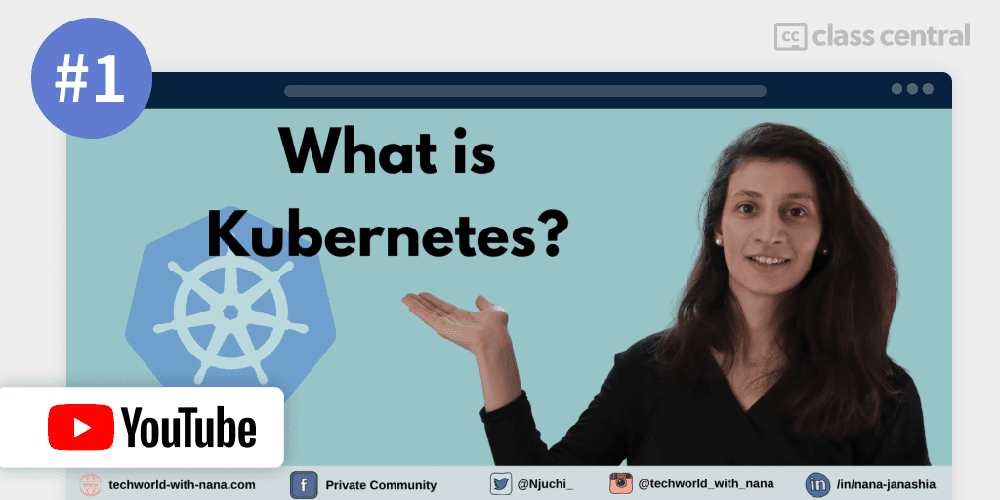
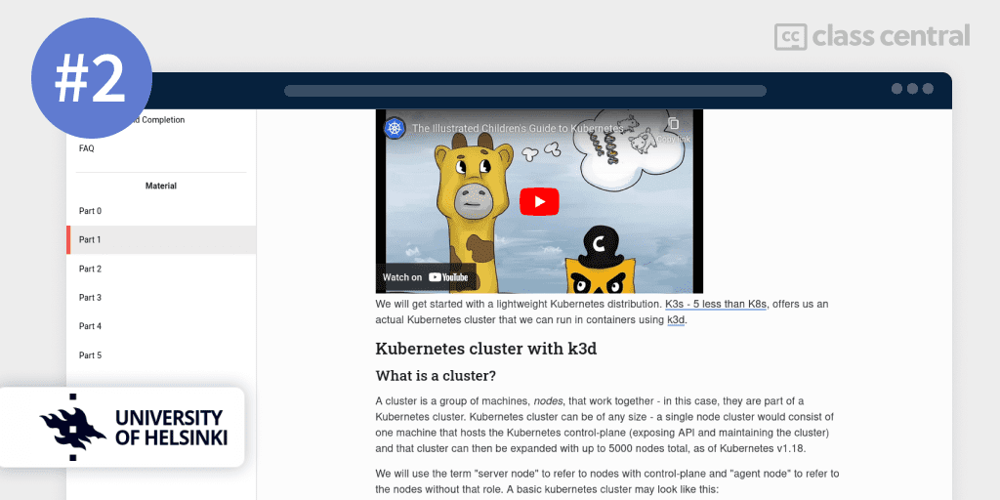
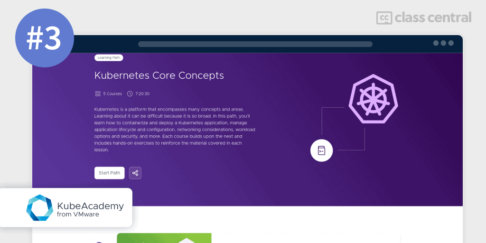
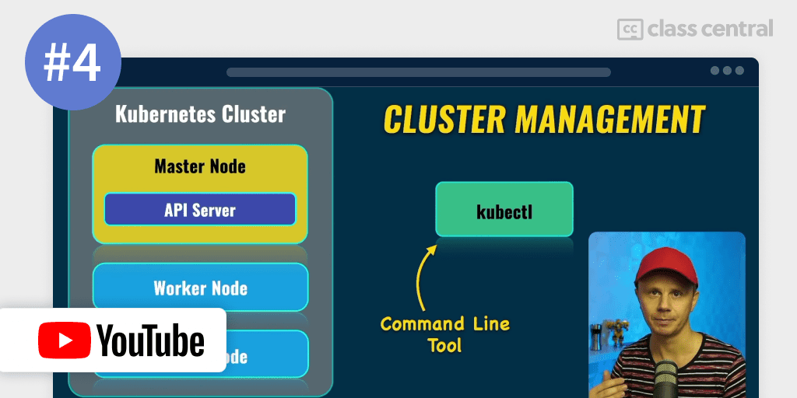
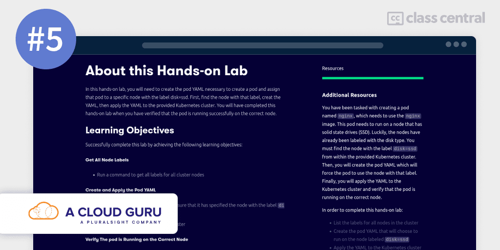
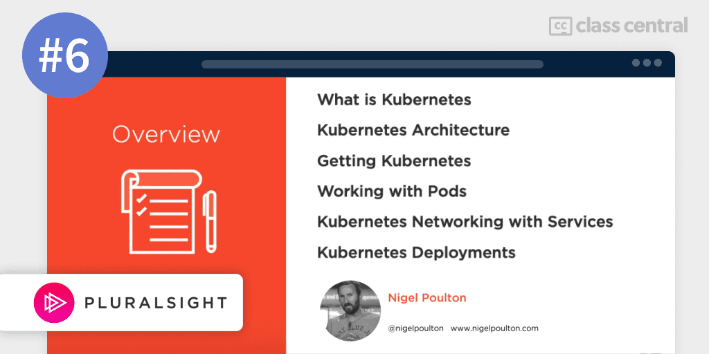
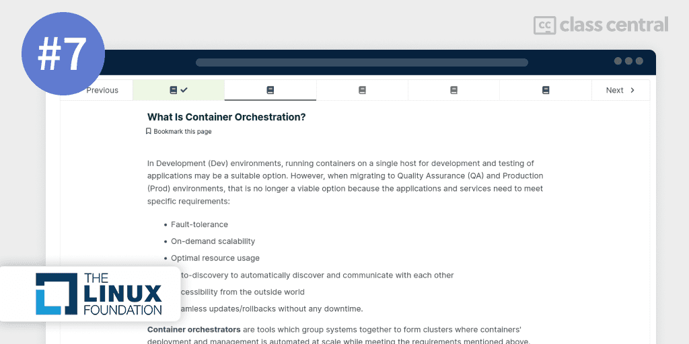
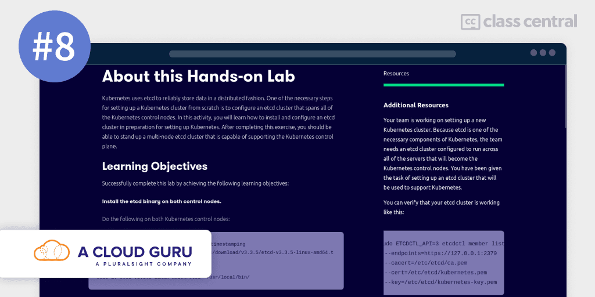
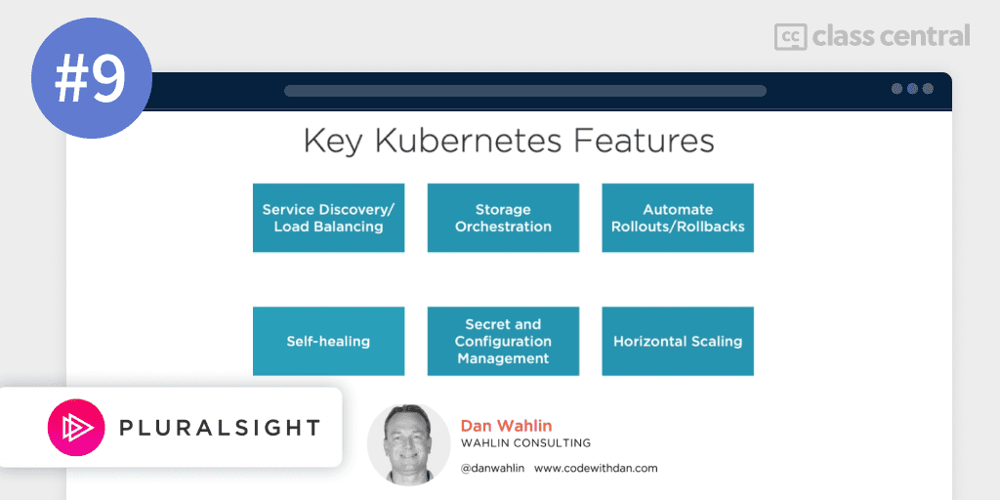

10 Best Kubernetes Courses to Take in 2023
Here is a guide to help you master the art of container orchestration with the top Kubernetes courses.
Are you tired of wasting time and energy manually deploying and managing your applications across various servers and environments? Do you wish there was an easier and more efficient way to handle these tasks? If so, then Kubernetes might be the solution for you, just as it was the solution for 61% of organizations.
Kubernetes is an open-source container orchestration platform that simplifies the deployment, scaling, and management of containerized applications.
Whether you’re running traditional monolithic applications or microservices, Kubernetes can help you automate the deployment and management process across any infrastructure, whether it be on-premises, or cloud, or both (hybrid).
Read on more to find my top picks for the best Kubernetes course. Click on one to skip to the course details:
| Course | Workload | In Brief |
| 1. Kubernetes Tutorial for Beginners (TechWorld with Nana) | 4 hours | Best free introductory course that tells you Kubernetes is all about |
| 2. DevOps with Kubernetes (University of Helsinki) | 95 hours | Best free university course offering a complete learning experience from beginner to advanced. |
| 3. Kubernetes Core Concepts (KubeAcademy) | 8 hours | Best free hands-on course for developers with no knowledge of containers |
| 4. Kubernetes Course – Full Beginners Tutorial (Bogdan Stashchuk) | 3 hours | Best free concise developer-focused video |
| 5. Learn Kubernetes by Doing (A Cloud Guru) | 22 hours | Best lab-based course to practice the ins-and-outs of Kubernetes |
| 6. Getting Started with Kubernetes (Nigel Poulton) | 3 hours | Best short deep-dive into Kubernetes |
| 7. Introduction to Kubernetes (Linux Foundation) | 42 hours | Best free course for Linux users |
| 8. Kubernetes the Hard Way (A Cloud Guru) | 17 hours | Advanced course that teaches Kubernetes with minimal abstractions |
| 9. Kubernetes for Developers: Core Concepts (Dan Wahlin) | 5 hours | Best PluralSight course for beginners |
| 10. Certified Kubernetes Administrator (CKA) with Practice Tests (KodeKloud Training) | 22 hours | Best course to prepare for Kubernetes certification |
What is Kubernetes?
Kubernetes (also known as “K8s”) is an open-source container orchestration platform that was first developed by Google in 2014. Google had always used Docker containers to help squeeze every ounce of performance out of their servers to power intensive online services like Google Search and YouTube. To manage their rapidly growing number of clusters, Google built Borg (the predecessor of Kubernetes) to automate the deployment, scaling, and management of containerized applications.
Borg did this by providing a set of APIs and tools to help the developer define the desired state of your applications. Once that’s done, Borg will handle the rest automatically. This means developers can focus on building and improving your applications, rather than worrying about the technicalities of deployment and management, while operations teams can easily ensure the reliability and performance of their applications.
Realizing the potential for this technology to become the industry-standard for managing containerized applications (and to indirectly monetize from it with their cloud services), Google released Kubernetes as a free and open-source project under the Cloud Native Computing Foundation (CNCF) to help speed up adoption and development. And it worked! Kubernetes is now the de-facto standard for container orchestration, with 61% of organizations in 2022 using Kubernetes to streamline the management of their containerized applications.
Over the years, Kubernetes has continued to evolve and expand, with new features and capabilities being added to meet the needs of a growing user base. Although Google Kubernetes Engine makes up a significant portion of container tools, there are other alternatives that extend upon Kubernetes like Amazon ECS, Azure Kubernetes Service, and Red Hat OpenShift.
According to the Stack Overflow Developer Survey 2022, Kubernetes is the second most loved and highly sought-after tool among developers and DevOps engineers. Additionally, the 10th Annual Open Source Jobs Report confirms that there is high demand for cloud and container technology as agreed by approximately 70% of hiring managers and IT experts. The salary reflects the demand, with Kubernetes engineers making an average of $150,000 a year according to ZipRecruiter, which is well above what the average software engineer makes. Learning Kubernetes is essential for any DevOps engineer, so learn Kubernetes if you plan to become one!

Best Courses Guides Methodology
I built this ranking following the now tried-and-tested methodology used in previous Best Courses Guides (you can find them all here). It involves a three-step process:
- Research: I started by leveraging Class Central’s database with 100K online courses and 200K+ reviews. Then, I made a preliminary selection of 300+ Kubernetes courses by rating, reviews, and bookmarks.
- Evaluate: I read through reviews on Class Central, Reddit, and course providers to understand what other learners thought about each course and combined it with my own experience as a learner.
- Select: Well-made courses were picked if they presented valuable and engaging content and they have to fit in a set of criteria and be ranked accordingly: comprehensive curriculum, affordability, release date, ratings and enrollments.
Course Ranking Statistics
Here are some aggregate stats about the ranking:
- Over 1.3K people are following 300+ Kubernetes Courses on Class Central.
- All of the courses in this ranking except for the third require knowledge of containers (like Docker).
- 7 of the courses in this ranking are free, free-to-audit, or have free-trial, whereas the rest are paid.
- All of the courses are in English.
- Six of the courses are suitable for beginners, while two are for intermediates and another two more are for experienced developers.
Without further ado, let’s go through the top picks.
1. Kubernetes Tutorial for Beginners (TechWorld with Nana)

My #1 pick for the best Kubernetes course is TechWorld with Nana’s Kubernetes Tutorial for Beginners.
This free course is my top pick because it effectively balances theoretical and practical info in just 4 hours. Through the use of clear visuals and hands-on examples, Nana distills hard-to-understand concepts into the simplest of forms.
By the end of this course, you’ll have a thorough understanding of Kubernete components and architecture, and be able to use it to automate the deployment, scaling, and management of containerized applications.
In order to take this course, you’ll need to know what containers are. If you don’t, but want a course that teaches both Dockers and Kubernetes, take a look at the third pick in this ranking.
What You’ll Learn
You’ll begin this course by learning about the main parts of Kubernetes, like Nodes, Pods, and services, and how they fit into the overall architecture of the system.
After studying its parts, it’s time to start using it! You’ll set up and use Kubernetes on your local machine with minikube and kubectl, and perform common tasks such as managing pods and deployments, and debugging issues.
Eventually, you’ll find yourself needing to organize multiple Kubernetes objects. Do not fret, namespaces and YAML configuration files are here to help! You’ll learn the difference between them — where namespaces are used to organize and manage groups of Kubernetes objects, YAML is used to define and create those objects. You’ll also learn how to use ingresses to expose one or multiple services to the external world, as well as Helm, a package manager, for deploying applications to the web.
Finally, you’ll dive deeper into three specific components of Kubernetes: persistent volumes and persistent volume claims, which are used for data storage; stateful sets, which are used to deploy stateful applications like databases; and different types of Kubernetes services, and how to choose the right one for your needs.
How You’ll Learn
This course is four hours long. It contains a mix of animated theoretical explanations and hands-on demos for you to follow along.
| Channel | TechWorld with Nana |
| Provider | YouTube |
| Instructor | Nana Janashia |
| Level | Beginner |
| Workload | 4 hours |
| Views | 5.6M |
| Likes | 80K |
| Certificate | None |
Fun Facts
- Nana Janashia is a Docker Captain, AWS Container Hero, and a CNCF Ambassador. She mainly creates tutorials on DevOps concepts, like CI/CD, Docker, and Prometheus.
- TechWorld with Nana YouTube channel has over 700K subscribers where you’ll find plenty of DevOps full-fledged courses and tutorials for beginners. If you want to stay the pace with DevOps, you should subscribe to her channel!
If you’re interested in this course, you can find more information about the course and how to enroll here.
2. DevOps with Kubernetes (University of Helsinki)

My 2nd pick for the best Kubernetes course is DevOps with Kubernetes from the University of Helsinki.
This course is a free open-source introductory course to Kubernetes with K3s and GKE, written by a web developer for web developers. You’ll develop software with a microservice architecture that utilizes Kubernetes to serve software that scales and deploys automatically, while managing it all. This course provides a free certificate of completion for anyone who completes all the exercises.
Having a community of developers to rely on when you face problems is crucial when learning, and luckily this course has its own Discord channel that anyone is free to join to ask questions.
To take this course, you should be familiar with containers, be able to independently develop web software, have knowledge of SQL databases, and know the basics of networking.
What You’ll Learn
You’ll start right off the bat by creating and running a Kubernetes cluster locally with k3d, and deploy a simple microservice. Then, you’ll fill in the details by studying Kubernetes internals such as debugging, networking, and storage.
In the next part of the course, you’ll focus on managing clusters. This will involve learning how Pods communicate with each other, how to group and label resources together, fine-tuning components using configuration files, StatefulSets, or Jobs, and lastly, monitoring the performance of your cluster.
Doing things on your local machine is fun and all, but it’s now time to explore cloud options, like Google’s Kubernetes Engine. You’ll create a deployment pipeline, enable continuous delivery in the cloud, choose between update strategies, use an open-source monitoring and alerting tool called Prometheus, and do GitOps — managing and deploying applications using Git as a single source of truth.
Finally, you’ll explore best practices for web development using Kubernetes. One of them is extending the Kubernetes API by defining your own custom resources, while another is monitoring and controlling network traffic using a service mesh. You’ll end this course by exploring several popular platforms that extend Kubernetes functionality like OpenShift and Knative.
How You’ll Learn
This course is 95 hours long. You’ll learn by going through the lecture articles and answering the exercises that appear within them. At the end of each part, you’ll be given a summary as well as a few coding questions to recap what you’ve learned.
To complete the course and get a certificate, you must submit solutions for all of the exercises in parts 1–5. There is no final exam for this course.
| Institution | University of Helsinki |
| Level | All Levels |
| Workload | 95 hours |
| Certificate | Free |
Fun Facts
- The course has 103 bookmarks on Class Central.
- University of Helsinki has partnered with Unity to create this course.
- This course is equivalent to 5 ECTS credits for University of Helsinki Students.
If you’re interested in this course, you can find more information about the course and how to enroll here.
3. Kubernetes Core Concepts (KubeAcademy)

My third pick for the best course to learn Kubernetes is KubeAcademy’s Kubernetes Core Concepts Learning Path.
This free learning path is much more hands-on than the first two picks in this ranking, with virtual labs and exercises. You’ll learn how to containerize with Docker and deploy a Kubernetes application, manage application lifecycle and configuration, networking considerations, workload options, and security.
No knowledge of containers or Kubernetes is required to take this course.
What You’ll Learn
The course begins with an introduction to containers with Docker, which provide a consistent environment for deploying applications and managing them after deployment.
But what if you have many different applications in many different containers? That’s where Kubernetes comes in. You’ll learn the fundamentals of cloud native infrastructure and understand how to deploy and manage applications in a Kubernetes environment, which will include approaches for handling development lifecycle and application configuration, with Pods and Containers.
You’ll cover cluster concepts where you can run many applications in a single Kubernetes cluster. Hence, you’ll study networking and traffic management to ensure the right user can access the right application. You may also have applications that require persistent storage, or have different configurations in different environments, or other requirements. You’ll learn how to satisfy these requirements. Finally, the course covers different types of workloads that can be run in Kubernetes and address security considerations for each.
How You’ll Learn
This learning path is 8 hours long. Each course in the series builds upon the last, and every lesson is followed by an in-browser virtual lab to reinforce the material covered.
| Institution | VMware |
| Provider | KubeAcademy |
| Level | Beginner — Intermediate |
| Workload | 8 hours |
| Certificate | None |
Fun Facts
- VMware is a virtualization and cloud computing software provider. KubeAcademy is their learning platform for cloud technologies, taught by developer instructors at VMWare.
If you’re interested in this course, you can find more information about the course and how to enroll here.
4. Kubernetes Course – Full Beginners Tutorial (Bogdan Stashchuk)

Kubernetes Course – Full Beginners Tutorial is another excellent free course on Kubernetes.
This course is more developer-focused than the 1st course on this ranking, focusing more on the practical than technical aspects (which is why it is also quite short). By the end, you’ll be able to set up Kubernetes for your projects.
Prerequisites for this course include basic knowledge of containerization and experience with the Docker command-line tool.
What You’ll Learn
You’ll begin this course by covering the key features of Kubernetes, including terminology and the structure of a Kubernetes cluster. You’ll understand the structure of a Kubernetes cluster, including Nodes and Pods, and see how Kubernetes is used to deploy and manage containerized applications.
Then, you’ll install and set up kubectl and minikube — tools for running a single-node Kubernetes cluster — and build a small Kubernetes cluster locally on your computer and use it to scale deployments and perform rolling updates. You’ll also build a custom Docker image, push it to Docker Hub, and create a Kubernetes deployment based on this image.
Additionally, you’ll learn how to create services and deployments in Kubernetes using YAML configuration files and how to connect different deployments together. Finally, you’ll learn how to change the container runtime from Docker to CRI-O and deploy applications using CRI-O.
How You’ll Learn
This course is 3 hours long. You’ll learn by watching the course video and practicing what the instructor has taught in the video.
| Channel | freeCodeCamp |
| Provider | YouTube |
| Instructor | Bogdan Stashchuk |
| Level | Beginner |
| Workload | 3 hours |
| Views | 356K |
| Likes | 7.1K |
| Certificate | None |
Fun Facts
- freeCodeCamp offers many other courses on various programming languages on their YouTube channel as well as on their website.
- Bogdan Stashchuk is a software developer and DevOps engineer that creates courses and tutorials on his YouTube channel and Udemy. Over 1M+ students have enrolled in his courses.
If you’re interested in this course, you can find more information about the course and how to enroll here.
5. Learn Kubernetes by Doing (A Cloud Guru)

Learn Kubernetes by Doing is a paid course jam-packed with hands-on labs and exercises to help you gain experience with Kubernetes for real-world usage. You’ll practice real-world scenarios in real cloud environments.
To be successful in this course, you should have a basic understanding of the Linux operating system, including system administrator concepts and containers.
What You’ll Learn
The course first covers Kubernetes basics where you’ll set up a local development environment. You’ll then discover the components of a Kubernetes cluster and how they work together by deploying a simple service and a microservice application. You’ll also learn how to manage applications after deployment using tools like kubectl.
Next, you’ll delve into the theory behind Kubernetes and uncover how Kubernetes discovers and communicates with services, as well as some practical concepts like scheduling and managing the lifecycle of applications, and handling failures. You’ll also learn about persistent storage and how to use ClusterRole to ensure security.
This course will also cover testing strategies for your Kubernetes cluster, including how to perform integration and end-to-end testing, and monitoring and logging the performance and health of your Kubernetes cluster. Finally, you’ll learn advanced techniques for manually setting up and managing a Kubernetes cluster through bootstrapping and other methods, or in other words you’ll be “doing things the hard way.”.
How You’ll Learn
This course is 22 hours long. You’ll mainly learn by practicing through virtual labs that are powered by one or more Linux and their Cloud Playground platform.
| Institution | Pluralsight |
| Provider | A Cloud Guru |
| Instructor | Terry Cox |
| Level | Intermediate — Advanced |
| Workload | 22 hours |
| Certificate | Paid |
Fun Facts
- A Cloud Guru is an online training platform established by its parent company, Pluralsight, for Information Technology. Most of the courses offered prepare students to take certification exams for the three major cloud providers (Microsoft Azure, Google Cloud Platform, and Amazon Web Services).
- If you want a more detailed look at how to set up Kubernetes ‘the hard way’, look at the 8th course in this ranking.
If you’re interested in this course, you can find more information about the course and how to enroll here.
6. Getting Started with Kubernetes (Nigel Poulton)

Getting Started with Kubernetes is a short paid course with free trial on quickly getting up and running with Kubernetes — the most important container management technology in the world. By the end, you’ll have theory and practical skills required to use Kubernetes on the job.
What You’ll Learn
In this course, you’ll start off by learning about the background and purpose of Kubernetes. Then, you’ll dive into the architecture of Kubernetes and its main components and services, so that you can understand how it all works together to create a production-ready container infrastructure. After that, you’ll get hands-on with Kubernetes by using Pods to deploy apps to a network. You’ll also cover how to connect your app to a cloud load balancer, and explore features like scaling, self-healing, and rolling updates. But don’t worry — the course will go over these trendy buzzwords in detail so you can decide which ones you want to include in your deployments.
How You’ll Learn
This course is 3 hours long. You’ll learn by watching the lecture videos and following along with the instructor.
| Provider | Pluralsight |
| Instructor | Nigel Poulton |
| Level | Beginner |
| Workload | 3 hours |
| Rating | 5.0 / 5.0 (714) |
| Certificate | Paid |
Fun Facts
- Nigel is a Docker Captain and expert in container technologies, with a background in designing and managing large-scale solutions in demanding corporate environments. He is well-known in the tech industry for his videos and books on container technologies, with over 20 courses on Pluralsight.
If you’re interested in this course, you can find more information about the course and how to enroll here.
7. Introduction to Kubernetes (Linux Foundation)

Introduction to Kubernetes covers both basic and advanced concepts of Kubernetes architecture. If Linux is your beloved operating system, you’ll love this course.
This 14 weeks free-to-audit course teaches you how to deploy stand-alone and multi-tier applications, which will involve ConfigMaps, Secrets, and Ingress. Upon completion, you’ll have a solid understanding of Kubernetes and be able to begin using it to implement cloud native patterns.
Basic knowledge of Linux Command Line Interface (CLI) and container technology like Docker and rkt is required to take this course.
What You’ll Learn
Introduction to Kubernetes begins by discussing the recent trend of companies transitioning from monolith services to microservices, setting the stage for you to understand why Kubernetes was created in the first place and how it is used for container orchestration.
Next, you’ll study the architecture, primary components, and building blocks of Kubernetes. You’ll then be able to set up and access a Kubernetes cluster by yourself using the Minikube tool.
You’ll then learn in further detail about various ways of running and accessing applications on a deployed Kubernetes environment. Hence, you’ll learn about concepts like authentication and authorization for security, services for exposing applications, and ingresses for exposing services to external traffic, and ConfigMaps and Secrets for configuration and privacy. You’ll also uncover some of Kubernetes’ more advanced enterprise-class features, such as multi-node pod controllers, stateful application controllers, batch controllers. Finally, you’ll be shown several Kubernetes communities and how you can participate.
How You’ll Learn
This course is 42 hours long. You’ll learn by reading the course articles provided and taking notes. If you’re paying for the certificate, you’ll have access to the graded knowledge checks (quizzes) and the final exam that you’ll have to complete in order to obtain your certificate.
| Institution | Linux Foundation |
| Provider | edX |
| Instructor | Chris Pokorni |
| Level | Beginner — Intermediate |
| Workload | 42 hours |
| Enrollments | 284K |
| Certificate | Paid |
Fun Facts
- The course has 200 bookmarks on Class Central.
- Chris Pokorni is an instructor and founder of NQB8 Cloud Tech Consulting, with a background in Cloud Tech Consulting and experience teaching Kubernetes courses for both Administrators and Application Developers. He is certified in both CKA and CKAD and has worked as a consultant for small and large enterprises, leading workshops and designing solutions for HA Middleware/ESB, Datacenter Monitoring, and Hybrid Cloud Architecture.
- The Linux Foundation is a non-profit organization that promotes the use and development of open source software, with a focus on the Linux operating system. It provides resources and support for individuals and companies involved in open source projects, including training, certification programs, and conferences.
If you’re interested in this course, you can find more information about the course and how to enroll here.
8. Kubernetes the Hard Way (A Cloud Guru)

Kubernetes bootstrapping is usually done with the use of installers or scripts like kubeadm.
But to get a deeper understanding of how Kubernetes works and how it can be deployed in a production environment, the Kubernetes the Hard Way course ditches all of that in favor of doing it manually. In the process, you’ll be able to troubleshoot even the most obscure of issues that may arise when deploying it in a production environment.
Prior knowledge of Kubernetes is required to take this paid course.
What You’ll Learn
The following topics are what you’ll cover in this course:
- Introduction
- Getting Started
- Provisioning the CA and Generating TLS Certificates
- Generating Kubernetes Configuration Files for Authentication
- Generating the Data Encryption Config and Key
- Bootstrapping the etcd Cluster
- Bootstrapping the Kubernetes Control Plane
- Bootstrapping the Kubernetes Worker Nodes
- Configuring kubectl for Remote Access
- Networking
- Deploying the DNS Cluster Add-on
- Smoke Test
- Wrap-Up
How You’ll Learn
This course is 17 hours long. You’ll learn by watching the video tutorials and more significantly, through hands-on, practical learning experience by completing the virtual labs.
| Institution | Pluralsight |
| Provider | A Cloud Guru |
| Instructor | William Boyd |
| Level | Advanced |
| Workload | 17 hours |
| Certificate | Paid |
Fun Facts
- A Cloud Guru has helped 2M+ people and more than 4,000 organizations level up their cloud skills.
If you’re interested in this course, you can find more information about the course and how to enroll here.
9. Kubernetes for Developers: Core Concepts (Dan Wahlin)

Kubernetes for Developers: Core Concepts teaches developers the fundamental concepts of Kubernetes and how to use it to deploy and manage applications in a reliable and scalable way.
In this paid course with free trial, you will learn about key Kubernetes resources, the benefits they offer, and how to get started using them effectively. By the end of this course, you will have a solid understanding of how to use Kubernetes to manage and orchestrate your containers.
You’ll need to know what containers are to take this course.
What You’ll Learn
The course begins by providing a big picture look at what Kubernetes is, what it’s composed of, and different ways it can be used as a developer. You’ll learn how to set up Kubernetes on your local machine and interact with it using kubectl. Then, you’ll discover one of the key resources provided by Kubernetes, Pods, and understand how to use them, along with other resources such as deployments and services to host and expose your application to the outside world.
Next, you’ll explore the role of ConfigMaps and secrets in managing configuration data and handling sensitive information. You’ll also learn how to troubleshoot Pods. Finally, you’ll see how to bring all of these concepts together to get an application up and running in a Kubernetes cluster.
How You’ll Learn
This course is 5 hours long. You’ll learn through a combination of lecture videos and hands-on demonstrations with the instructor.
| Provider | Pluralsight |
| Instructor | Dan Wahlin |
| Level | Beginner |
| Workload | 5 hours |
| Rating | 5.0 / 5.0 (600) |
| Certificate | Paid |
Fun Facts
- Dan Wahlin is the founder of Wahlin Consulting and an expert in various programming languages and technologies, including JavaScript, Angular, Node.js, C#, ASP.NET MVC, Web API, Docker, and Kubernetes. He is a Google GDE and Docker Captain, and has previously been recognized as a Microsoft MVP and Regional Director. He has also authored over 30 Pluralsight courses.
If you’re interested in this course, you can find more information about the course and how to enroll here.
10. Certified Kubernetes Administrator (CKA) with Practice Tests (KodeKloud Training)

If you’re planning on taking the Certified Kubernetes Administrator (CKA) certification exam to demonstrate your hands-on skills and expert knowledge of Kubernetes, you’ll need a lot of practice.
Certified Kubernetes Administrator (CKA) with Practice Tests is here to help you with that. This paid course focuses on advanced topics on Kubernetes and in-depth discussion into the various concepts around deploying a high availability cluster for a production use case, understanding more about scheduling, monitoring, maintenance, securities, storage, and troubleshooting.
You’ll also have access to a community Slack channel where you can interact with the instructors and other students. The course is also constantly updated to keep up with CKA exam’s quarterly updates.
To take this course, you’ll need a basic understanding of Docker and YAML.
What You’ll Learn
- Core concepts of cluster architecture: Pods, ReplicaSets, Deployments, and services
- Scheduling: including manual scheduling, DaemonSets, labels and selectors, resource requests and limits, and configuring multiple schedulers
- Logging and monitoring: options for the Kubernetes cluster and applications hosted on them, and how to view and manage the logs.
- Application lifecycle management: rolling updates, rollbacks, configuring applications, scaling applications, and health checks
- Cluster maintenance: operating system upgrades, cluster upgrades, best practices for upgrading, disaster recovery, and backup and restore methodologies
- Kubernetes security primitives: authentication mechanisms, TLS certificates, and securing various components within the cluster
- Networking: pod networking, service networking, and ingress networking
- Working with persistent storage: types of persistent storage, attaching persistent storage to applications, and configuring persistent storage for applications
- Troubleshooting: techniques for application, control plane, worker node, and network issues and failures.
- Advanced topics in Kubernetes: custom controllers, custom resource definitions, operator frameworks, among others.
How You’ll Learn
This course is 22 hours long. The course provides hundreds of coding exercises where you can practice solving Kubernetes coding challenges in live lab environments directly in your browser. Hints and solutions are provided, and your work will be immediately validated and receive feedback.
| Institution | KodeKloud Training |
| Provider | Udemy |
| Instructor | Mumshad Mannambeth |
| Level | Advanced |
| Workload | 22 hours |
| Enrollments | 216K |
| Rating | 4.7 / 5.0 (49K) |
| Certificate | Paid |
Fun Facts
- KodeKloud Training is a CNCF certified Kubernetes training partner.
- KodeKloud Training also offer other courses on Kubernetes as well:
- Kubernetes for the Absolute Beginners – Hands-on is for beginners with no experience with containers or container orchestration.
- Kubernetes Certified Application Developer (CKAD) with Tests is for application developers who are looking to learn how to design, build, and configure cloud native applications.
- Mumshad Mannambeth is the CEO and founder of KodeKloud, where he creates interactive and hands-on training to make learning fun.
If you’re interested in this course, you can find more information about the course and how to enroll here.


Cleydyr de Albuquerque
Awesome list with good amount of free courses! Saving these to consume later as I need to learn it for work ASAP. 🙂